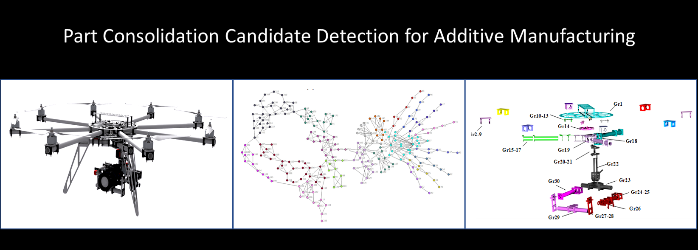
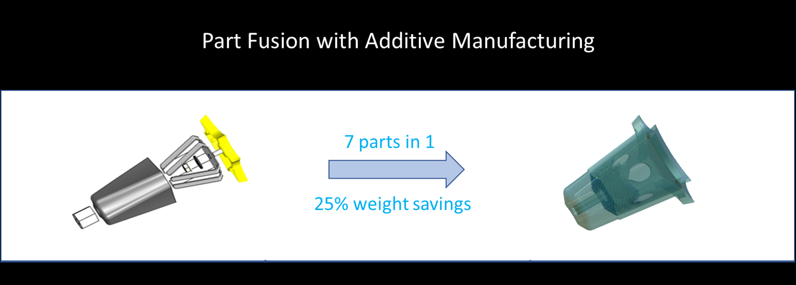
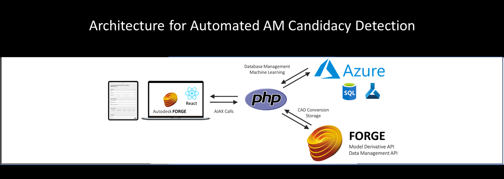
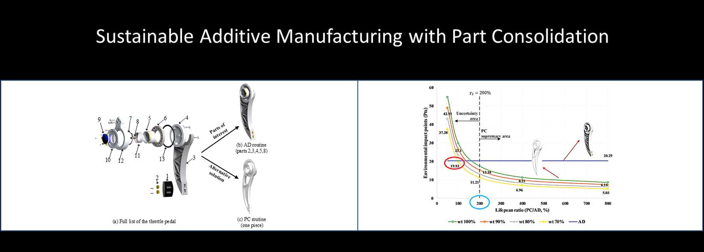

<
>
Welcome to the Design Innovation and Intelligent Manufacturing (DIIM) Lab
The Lab of Design Innovation and Intelligent Manufacturing has been established by Dr. Sheng Yang since September 2020, affiliated with the
Department of Mechanical Engineering
in the School of Engineering at the University of Guelph in Guelph, ON, Canada.
We are a highly multidisciplinary research team with members from mechanical engineering, material engineering and data science. Our mission is to developnovel design and manufacturing methods to support
smart and sustainable material, product, and service innovation in the fields of agriculture, aerospace, healthcare and green energy.
In collaboration with wide industrial partners, we endeavor to push the boundaries of computational design , digital manufacturing , advanced manufacturing , and sustainable lifecycle engineering .
We are a highly multidisciplinary research team with members from mechanical engineering, material engineering and data science. Our mission is to develop
Recent News
2021.05.03 Our project on "3D printed novel vehicle armour design" was funded by Canadian Department of Defense, congratulations!2020.09.15 Multiple PhD/MSc positions are available on data-driven design or additive manufacturing (3D Printing) beginning January, May, and September 2021. Master and undergraduate students looking for research projects are also welcomed. For more details, see opening.
Upcoming Event
NAMRC50 (TBA, USA), submission deadline 23/11/2021. See more.
Special issue on Smart and Resilient Manufacturing in the Wake of COVID-19 in the journal of Manufacturing System. Submission deadline 30/11/2020. See more.
Contact Information
Address: 50 Stone Road East. Guelph, Ontario, Canada, N1G 2W1Office: Richards Building, Room 3501
Lab: Richards Building, Room 1525
Phone:(+1) 519-824-4120 Ext. 58677
Email: syang19@uoguelph.ca
YouTube Channel: DIIM Lab.